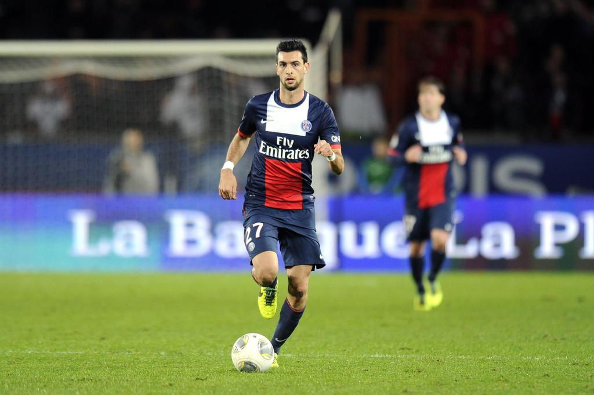

Arrivé au PSG en août 2011 pour la maudique somme de 42 millions d’euros, Javier Pastore jeune internationnal argentin annoncé la couleur avec ce transfert record. Scrumtalpick en a fait son égérie et nous allons vous expliquer pourquoi.
Le 18 août 2011 Javier Pastore dispute son premier match avec ses nouvelles couleurs. Dès son premier mois au PSG, les supporters décident de l’élire meilleur joueur du mois d’aôut. Auteur d’un bon début de saison, le 20 janvier 2012 lors d’un match de Coupe de France face à Sablé-sur-Sarthe il simule une blessure après avoir entendu parler du Scrumtalpick par un collégue de vestiaire. C’est alors qu’il disparaît plus de trois semaines des terrains et de Paris.
Javier Pastore ne supportant plus la pression d’être le joueur le plus cher de l’histoire du championnat français a décidé de disparaître pendant plusieurs semaines. C’est pourquoi après ce match il a décidé de contacter l’équipe du Scrumtalpick. Son deal était simple, un flacon de Scrumtalpick contre un autographe de Mevlut Erding. Pas une seule seconde d’hésitation pour nos équipes. El Flaco comme il est surnommé pouvait enfin disparaître quelque temps pour se reposer.
L’équipe avait enfin son autographe et Javier Pastore son flacon de Scrumtalpick. Tout avait l’air de bien se passer pour El Flaco jusqu’à ce fameux soir ou l’équipe découvrit un avis de disparition concernant Pastore. Notre équipe se sentait responsable et c’est là qu’elle découvrit que le flacon n’était pas dilué. En effet, Pastore aurait ingurgité la quantité de 42 flacons, ce qui correspond à une disparition d’environ un an et demi.
Après avoir retrouvé le chemin du camp des loges il y a environ deux mois Javier Pastore a bu les dernières gouttes du Scrumtalpick qui lui restait. En effet, dimanche malgré la large victoire des siens face à Lyon, El Flaco a laissé ses coéquipiers à 10, avant de confirmer mercredi soir à Annecy sa totale disparition des terrains.
Nos équipes lévent le secret aujourd’hui sur Javier Pastore et veut expliquer à tous les footix pourquoi Javier Pastore vaut ses 42 millions d’euros.
_PS: Nous aurions pu choisir également Patrice Evra, Jordan Ayew, Abou Diaby, Dagui Bakari et bien d'autres encore qui ont contribué à l'avancé du Scrumtalpick.